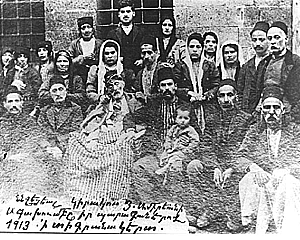

Undanik yv Dovn
hasxein5 Amiryan undanikin Web-i e]in me] a3s ngarin hantibyxa31 Wari ,arku` gytronu cdnovo. martu mahaxa/ e a3s ngarahanovmin =amanag1 A3s iro.ov;ivnu hydakrragan dovyalnyren megn e5 or a3s dysagi ngar mu grna3 un/a3yl ha3 undanikin masin1

#avylyal dy.ygov;ivnnyr grna|s dal kyzi /an0; ha3 undaniknyrov gam dovnyrov masin1
A3s niv;yren megu grnas zarcaxnyl5 gam 3adovg /racir mu iracor/yl1
A Undanikit dy.a'oqovmnyrovn kardesu ovni|s1 Tovn5 /no.kt5 my/ /no.kt5 h0ry.pa3rt5 zarmignyrt ov a3l azcagannyrt ovrge| yga/ yn ov o|vr yn hima1 Kardes mu badrasde5 a,qarhacragan dy.a,ar=yru yv pa=anovmnyru ngaracrylov hamar1
P Hydakrkragan i|n[ dovyalnyr gan garc mu undaniknyrov undanygan jiv.avorman /a-yrovn me]1 Grnas undanikit /a-u pa.tadyl ovri,nyrovn hyd5 nman dovyalnyr 3a3dnapyrylov hamar1 C/acrov;ivn mu badrasde5 garc mu ha3gagan undaniknyrov ivra3adgov;ivnnyru xo3x dalov hamar1
C Garyli| e ha3 ullalt g-ahyl barzabes dovnet nyrs na3ylow1 Kov abra/ dovnt ha3gagan 3adovg iryr gam 3adgani,nyr ovni|1 Oro, panyr dy.i g\ovnyna|n pnagaranit me]5 oronk 8gu madnyn9 /acovmt yv inknov;ivnt1 Dovnt ovsovmnasire5 inknov;yant masin dovyalnyr cdnylov hamar1
(Wyratar2i4r n,ylow A7 @y-nargi n,anu)